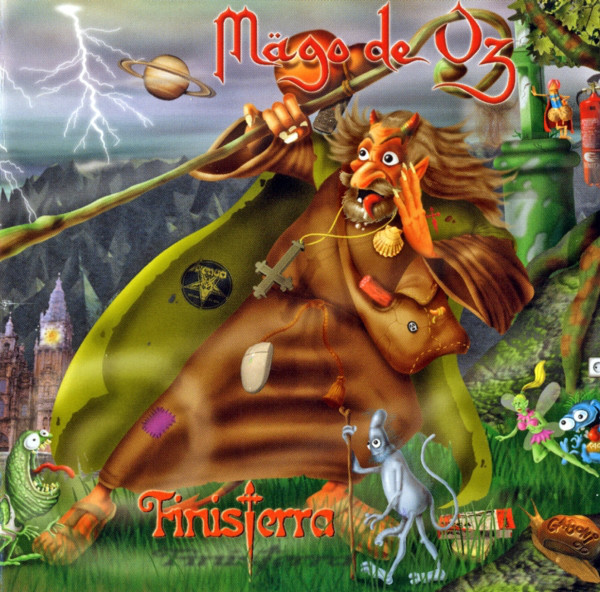
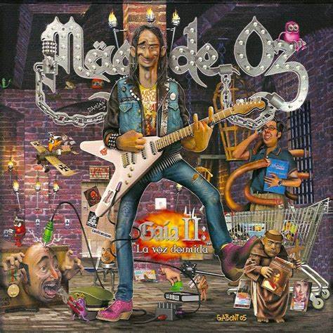
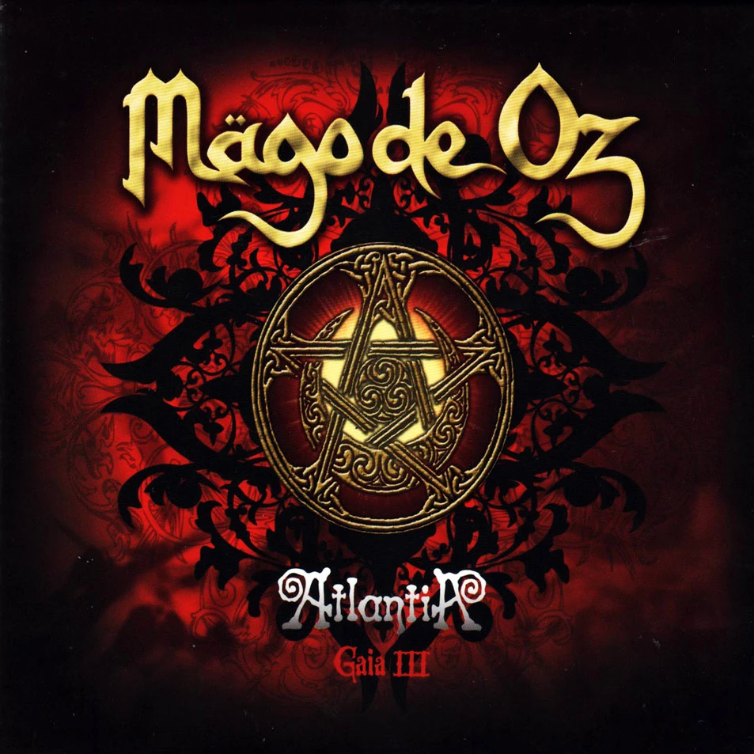

El mundo esta por terminar y no hay privacidad ni individualidad, todo es digital, un grupo de hackers en el 2199 parte de la resistencia del batallon de la cochambre a enconcontrado la historia de como termino el mundo libre y comenzo el reinado del servidor maestro de nombre SATANIA donde solo es posible ver un bosque digital si se esta conectado a él, traida por un apostol en los tiempos de la edad media recorriendo el camino de santiago de compostela hasta finisterra.

Luego de el encuentroentre Francisco de Goya y de Ludwin Bethoven estos dos personas deciden poner en marcha a la sociedad secreta a la que pertenecen y cada uno en una de sus obras han dejado un mensaje: "volaverunt opus 666: missit me dominus" solo para personas puras, donde siglos despues en 2005 el unico capaz de ver y oir el mensaje en las obras de dichos artistas es un chico de nombre Nacho con sindrome de down el cual mientras observaba la obra de Goya mientras escucha la novena sinfonia de Bethoven es poseido por el espiritu de La Voz Dormida da un mensaje de un acontecimiento futuro: el dia y la hora de la muerte del papa para asi anunciar el comienzo del fin no sin antes contarle una historia al detective Rafael Haro que investiga el caso desde Gaia 1, La Voz Dormida le cuenta sobre quien es, y todo lo que vivio en una de sus vidas pasadas al no creer en aquel al que llaman "DIOS"

Luego de aquella gran revelacion de la muerte del papa el detective Rafael Haro viaja a varios paise buscando los coincidencias con la historia contada y la asociasion a la muerte del papasin embargo en medio de la investigacion aparecen luces en el cielo han aparecido los atlantes y Rafael se ha dado de que ha llegado el final, ya no hay nada por hacer, Gaia se revela a la humanidad y anuncia el fin, se burla de las creencias de los mortales y como masacraron civilizaciones en nombre de "El dios verdadero" no queda mas que esperar el final y rezar, pero a quien?